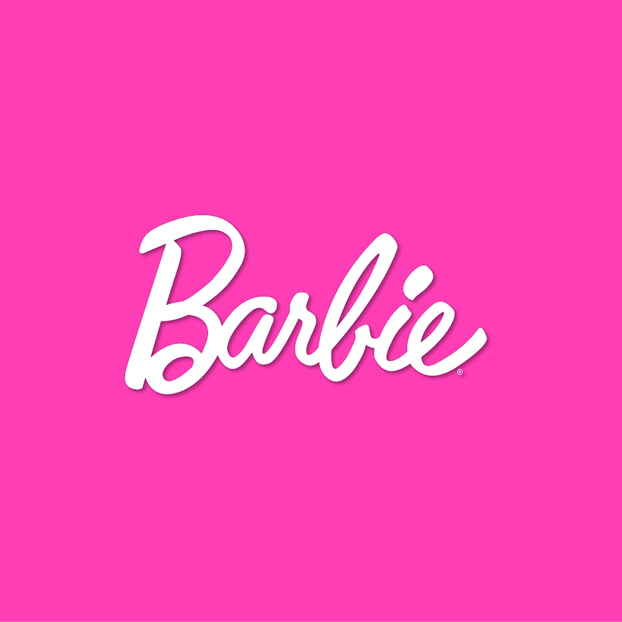

Apresentação
Me chamo Nicolly Corrêa, tenho 18 anos e trabalho como confeiteira. Atualmente, também estou estudando na área de informática, buscando integrar tecnologia ao meu trabalho na confeitaria. Desde o principio, sempre gostei de transformar ingredientes simples em doces saborosos, o que me motivou a seguir essa carreira na culinária. Estou bastante empolgada com as oportunidades que surgirão ao combinar essas duas áreas tão diferentes.
Tenho um desejo enorme de trabalhar com programação, especialmente na área de desenvolvimento. A sensação de criar algo útil a partir do zero é incrível.